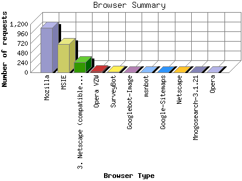

The Browser Summary identifies the most popular web browsers used to visit
this site.
Browsers are broken down by recognized categories such as
Netscape Navigator/Communicator, Microsoft Internet Explorer, WebTV, Opera
and the like. Within each category is also a subgroup by version number
such as 'MSIE 5.0' or 'Netscape 4.5'.
This report shows the first 20 results by number of requests. This report is sorted by number of requests.

| Browser Type | Number of requests | |
|---|---|---|
| 1. | Mozilla | 1,112 |
| 2. | MSIE | 704 |
| 3. | Netscape (compatible) | 253 |
| 4. | Opera VZW | 31 |
| 5. | SurveyBot | 15 |
| 6. | Googlebot-Image | 4 |
| 7. | msnbot | 4 |
| 8. | Google-Sitemaps | 2 |
| 9. | Netscape | 1 |
| 10. | Mnogosearch-3.1.21 | 1 |
| 11. | Opera | 1 |
This report was generated on July 9, 2009 20:37.
Report time frame March 4, 2009 22:26 to July 9, 2009 07:09.
| Web statistics report produced by: analog 5.1 / Report Magic 2.21 |